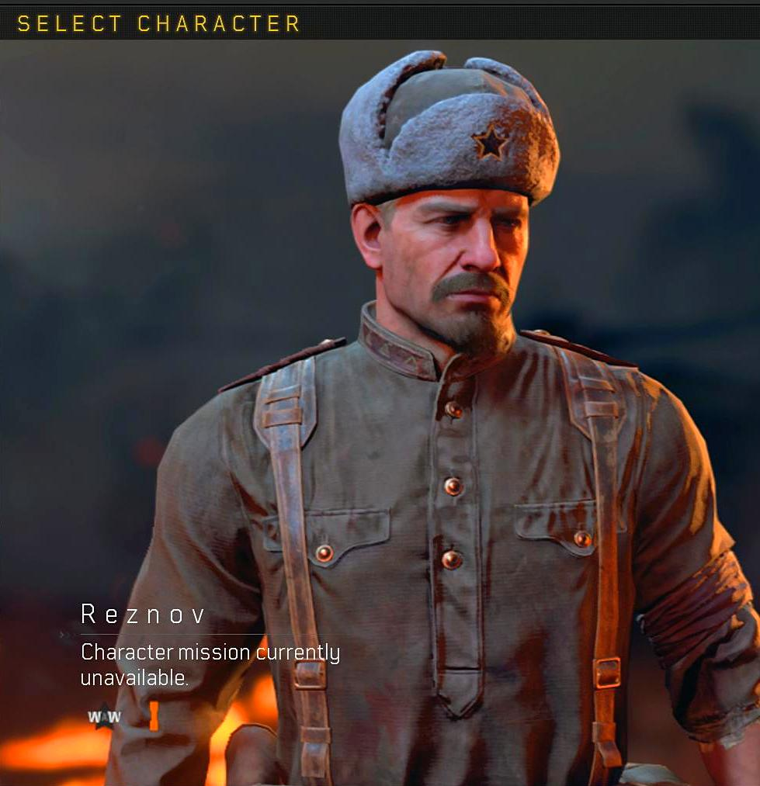
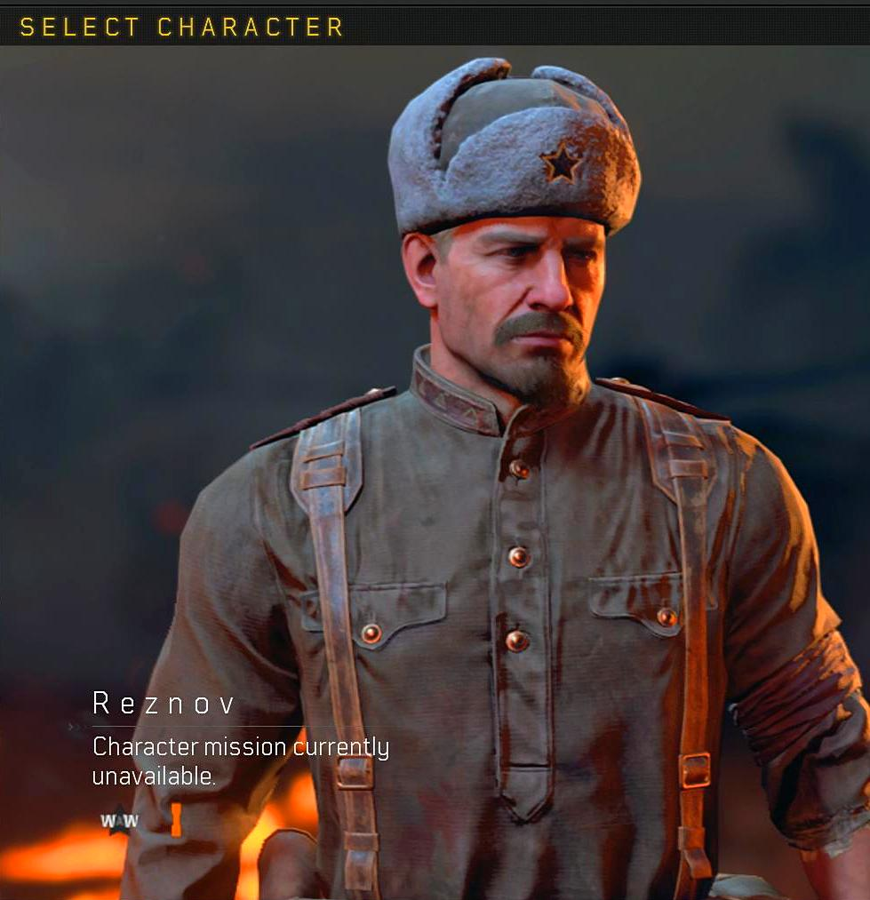
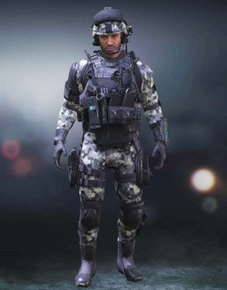
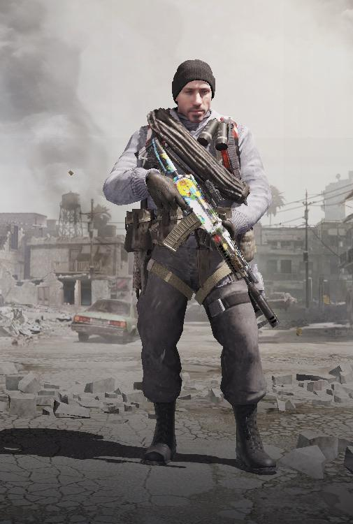
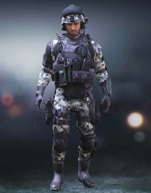
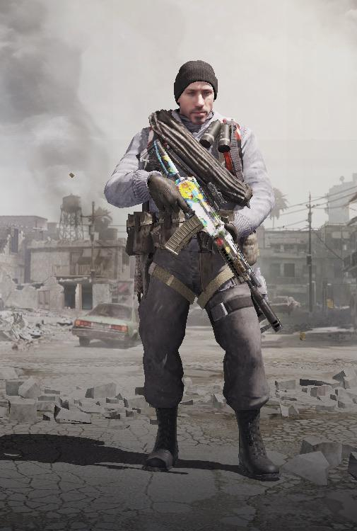
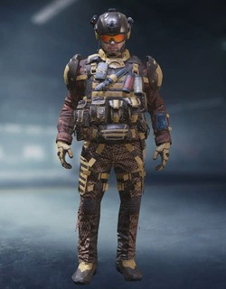
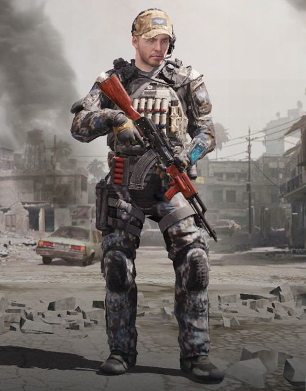
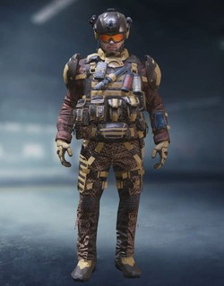
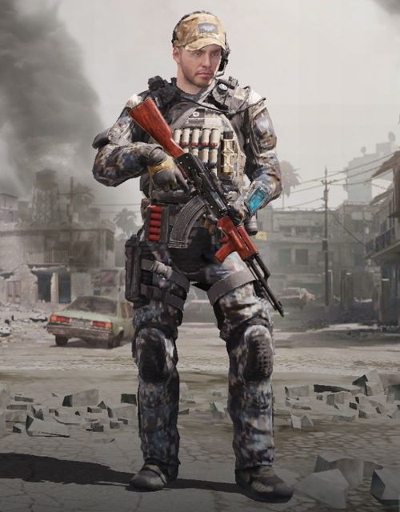

Call of Duty: Mobile is a free-to-play shooter video game developed by TiMi Studios and published by Activision and Garena for Android and iOS. It was released on October 1, 2019. The game saw one of the largest mobile game launches in history, generating over US$327 million with 250 million downloads by June 2020. Call of Duty: Mobile is a free-to-play shooter video game developed by TiMi Studios and published by Activision and Garena for Android and iOS. It was released on October 1, 2019. The game saw one of the largest mobile game launches in history, generating over US$327 million with 250 million downloads by June 2020.Call of Duty: Mobile is a free-to-play shooter video game developed by TiMi Studios and published by Activision and Garena for Android and iOS. It was released on October 1, 2019. The game saw one of the largest mobile game launches in history, generating over US$327 million with 250 million downloads by June 2020. Call of Duty: Mobile is a free-to-play shooter video game developed by TiMi Studios and published by Activision and Garena for Android and iOS. It was released on October 1, 2019. The game saw one of the largest mobile game launches in history, generating over US$327 million with 250 million downloads by June 2020.
Call of Duty: Mobile was announced in March 2019, with TiMi Studios, a subsidiary of Tencent Games, leading development. Many of the game's features were revealed at this announcement, promising a familiar experience for fans of the console games. The aim of the game was to take familiar aspects from the franchise's previous games and allow users to access them from their mobile devices. It features two in-game currencies, as well as a battle pass. On July 18, 2019, a soft launch began in Canada and Australia. The game was officially released in most other regions on October 1, 2019. Call of Duty: Mobile was announced in March 2019, with TiMi Studios, a subsidiary of Tencent Games, leading development. Many of the game's features were revealed at this announcement, promising a familiar experience for fans of the console games. The aim of the game was to take familiar aspects from the franchise's previous games and allow users to access them from their mobile devices. It features two in-game currencies, as well as a battle pass. On July 18, 2019, a soft launch began in Canada and Australia. The game was officially released in most other regions on October 1, 2019.
Call of Duty: Mobile features many playable characters, maps, and gamemodes from previous games in the series. Different control settings were included to cater to player's preferences. A "zombies" game mode was added to the game in November 2019. This game mode follows the classic Call of Duty zombies "survival" formula where the player fights off endless waves of zombies, aiming to survive as long as possible. A "Raid" mode was also included where the player must defeat a set amount of waves of zombies before encountering one of two final bosses. Call of Duty: Mobile Zombies mode was removed on March 25th, 2020 due to the game mode not meeting Activision's standards. But, Activision said they might bring it back in a later update. Call of Duty: Mobile features many playable characters, maps, and gamemodes from previous games in the series. Different control settings were included to cater to player's preferences. A "zombies" game mode was added to the game in November 2019. This game mode follows the classic Call of Duty zombies "survival" formula where the player fights off endless waves of zombies, aiming to survive as long as possible. A "Raid" mode was also included where the player must defeat a set amount of waves of zombies before encountering one of two final bosses. Call of Duty: Mobile Zombies mode was removed on March 25th, 2020 due to the game mode not meeting Activision's standards. But, Activision said they might bring it back in a later update.
Players can choose to play ranked or non-ranked matches in multiplayer mode. It has two types of in-game currencies: "Credits", which are earned through playing the game, and "COD Points", which have to be bought with real world money. It is possible to play the full game without paying, though some exclusive character and weapon skins can only be bought with COD Points. Apart from standard matchmaking, a private room for both the multiplayer and battle royale modes can also be accessed where players can invite and battle with just their in-game friends. Additionally, the game features special and limited multiplayer modes that may last for days, weeks, or a whole game season. These include: Prop Hunt, Rapid Fire, Sticks and Stones, 2v2, Capture the Flag, One Shot One Kill, Snipers Only, and Gun Game, among others. The game also includes a battle royale mode featuring up to 100 players. A player can choose to play alone, on a two-man team, or in a four-man squad. At the start of a game, all players choose an ability from healing to making a launch pad. Once all 100 people are ready, they get aboard a plane that flies in a straight line over the map. This flight path changes every game. Every team is automatically given a jump leader who decides when and where the team will land. At the beginning of the game, each player carries only a knife. The map is strewn with weapons, vehicles, and items which players can use to improve their chances of killing enemies while staying alive themselves. The safe zone on the map shrinks as the game progresses, with players who remain outside the zone being killed. A team wins the game if they are the last one remaining. A Zombies mode was added in November 2019. It placed teams of players against zombies that attacked in waves. It was playable in Endless Survival Mode, which ran like the classic zombies experience, and Raid Mode, which threw a set number of waves at the players before transitioning to a boss encounter. The players could choose whether to play it on normal or heroic difficulty. The mode was removed in March 2020 due to it not reaching the level of quality desired.
Modes:An Operator Skill is a periodical special skill which unlocks at a rate proportional to your kills and points. You can use the skills to your advantage, with some making it easier to take down opponents and others helping you protect yourself. An Operator Skill is a periodical special skill which unlocks at a rate proportional to your kills and points. You can use the skills to your advantage, with some making it easier to take down opponents and others helping you protect yourself. An Operator Skill is a periodical special skill which unlocks at a rate proportional to your kills and points. You can use the skills to your advantage, with some making it easier to take down opponents and others helping you protect yourself. An Operator Skill is a periodical special skill which unlocks at a rate proportional to your kills and points. You can use the skills to your advantage, with some making it easier to take down opponents and others helping you protect yourself.
The Call of Duty: Mobile World Championship 2020 Tournament was a partnership between Activision Blizzard and Sony Mobile Communications, and marks the game's entry into the top tier of esports. It featured more than $1 million in total prizes, which include both cash and in-game cosmetics. Competing teams were drawn directly from the game's community through four open online qualifiers from April 20 to May 24, 2020. Eligible players ranked veteran or higher have the chance to play. However, the use of desktop emulators and any external devices such as controllers and keyboards were prohibited. The Call of Duty: Mobile World Championship 2020 Tournament was a partnership between Activision Blizzard and Sony Mobile Communications, and marks the game's entry into the top tier of esports. It featured more than $1 million in total prizes, which include both cash and in-game cosmetics. Competing teams were drawn directly from the game's community through four open online qualifiers from April 20 to May 24, 2020. Eligible players ranked veteran or higher have the chance to play. However, the use of desktop emulators and any external devices such as controllers and keyboards were prohibited.
Call of Duty: Mobile received "generally favorable reviews", according to the review aggregator Metacritic. IGN wrote that the game “represents the best the juggernaut franchise has ever been on a handheld platform. The leveling path is rewarding, even without spending money, and there are lots of modes to jump around between, including an impressive battle royale mode.” GameSpot says “beyond its messy microtransaction menus and the slight time-saving purchases, there's not much else in Call of Duty Mobile that detracts from its faithful recreation of the exhilarating and fast-paced multiplayer action of the core series.” Polygon also praised the game stating, “Call of Duty: Mobile doesn’t come across like a deeply compromised or watered-down rendition of the age-old multiplayer format; it just feels like Call of Duty.”In its first month, the game had over 148 million downloads and generated nearly US$54 million in revenue, making it the largest mobile game launch in history. By June 2020, the game had seen over 250 million downloads, generating over $327 million in revenue.


 



 



 


